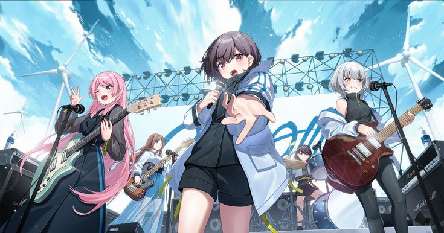

个人主页生成器
整站由 C++ 生成：内容用数据结构描述，编译运行即输出 index.html，仓库里没有手写 HTML。push 之后由 GitHub Actions 自动编译并部署到 Pages。
C++17 / GitHub Actions / GitHub Pages
查看源码
ZHE HONG
写代码，也看番。
进入后会播放背景音乐，可随时在右上角关闭
点击任意处跳过
C++ 开发者
正在加载…
在读学生，在学 C++，目前还在打基础，写点小项目练手。平时喜欢看动漫：邦多利、JOJO、鬼灭、轻音、咒术、孤独摇滚、闺泣、Fate 等。这个主页也是练习的一部分。
Generated by C++ · Deployed on GitHub Pages
还在起步阶段的编程学习者，喜欢把学到的东西做成能看的样子。
你好，我是遮鸿，目前在读，主攻方向是 C++。基础还在补，所以更喜欢用做项目的方式学——比如这个主页，就是拿来练结构设计、性能取舍和部署流程的。
日常除了写代码，主要时间花在动漫和音乐上。邦多利系列看得最多，也听歌、也打音游；所以页面里放了一个自动演奏的节奏小游戏，算是把两个爱好合在一起。
技术上我关心的东西很具体：代码能不能跑、跑得干不干净、页面会不会卡。这个站点的动画只用 transform 和 opacity，音游跑在单个 canvas 上，都是为了这两件事。
「手搓 + AI 辅助，还在入门，但知道自己在写什么。」
—— 关于学习态度数量不多，都是手搓 + AI 辅助做出来、能真跑起来的东西。
整站由 C++ 生成：内容用数据结构描述，编译运行即输出 index.html，仓库里没有手写 HTML。push 之后由 GitHub Actions 自动编译并部署到 Pages。
C++17 / GitHub Actions / GitHub Pages
查看源码页面里跑在 canvas 上的节奏小游戏，168 BPM 自动演奏。做一个能看的东西，顺便练 rAF 时间轴与性能取舍。
Canvas 2D / requestAnimationFrame / 性能优化
页面内查看还在构思中的 C++ 小工具，目标是先把基础打牢，再动手写点真正有用的东西。仓库里以后会放它。
C++ / 计划中
去我 GitHub 看看一份不打算修饰的时间线。
2026 - 至今
沈阳理工大学
开始读大学，课余继续打游戏、看番，顺便写点代码。
2023 - 2026
成都某不知名高中
天天打游戏，上课就睡觉。
2014 - 2023
成都某不知名学校
搞忘天天干啥了。
如实标注当前水平，不虚报。进度条代表熟练度，不代表上限。
常用开发环境
现阶段的时间和精力主要投在这几件事上。
类、STL、指针和引用这些，边写边学，写不明白就再写一遍。
课程在学，顺便用 C++ 手写一遍，加深对底层实现的理解。
这个网站就是在用的过程中学会的：分支、提交、Actions 部署。
常用命令会一些，还在慢慢熟悉命令行下的工作方式。
写代码之外的另一个输入源，也是审美和情绪的来源。
反复看的一部，最喜欢高松灯。
同一世界观，钢琴与舞台调度都很吸引人。
不服就唱，情绪很直给。
社恐共鸣，演出段落的作画很带劲。
放学后的下午茶，安安静静地治愈。
替身设定太浪漫，替身使者会互相吸引。
作画和配乐都在线，打斗看着很爽。
战斗分镜很有想法，五条悟最强。
设定党狂喜，UBW 一生推。
一个跑在单个 canvas 上的节奏小游戏：168 BPM，七轨，命中特效由 requestAnimationFrame 时间轴驱动。滚出可视区域会自动暂停。默认自动演奏，想自己打就按下面那颗按钮。
轨道不是随机数表：rhythm_core.cpp 编译成 WebAssembly 在浏览器里跑，每个音符落在哪条轨由 C++ 决定；点开始挑战后，判定窗口与准确率也由同一个 wasm 内核算，生成器再用同一份头文件算一份探针逐条比对。
C++ / WASM 内核 · 检测中…
当前 seed 是生成器内联的那份 · 加载内核后会与 JS 镜像逐位核对
这个网站本身就是一个 C++ 项目。
页面上看到的所有内容——包括导航、卡片、开关——都由 main.cpp 生成。运行生成器会输出 index.html 和 favicon.svg，仓库里没有手写的 HTML。
每次推送到 main 分支，GitHub Actions 会用 g++ 编译并运行生成器，再把产物部署到 GitHub Pages。
没有一行行纯手打那么硬核，也没法一键生成这么省事：主体自己手搓，卡住的地方让 AI 搭把手，写完再自己读一遍改到能看懂为止。
写这个站点的过程本身就是练习：结构怎么拆、动画为什么卡、部署怎么跑通，都是一处处自己试出来的。
性能上的取舍写在这里，方便以后自己回看：动画只用 transform 与 opacity；不使用 backdrop-filter 与 background-attachment: fixed；倾斜、聚光、视差全部 rAF 节流且只在桌面端启用；音游跑在单个 canvas 上；背景音乐在首次交互后才加载。
整站默认按「没有 JavaScript」渲染：脚本挂了，内容、技能条长度、数字条也都还是对的；入口门与入场动画是脚本跑起来之后才加上去的装饰。音游的谱面由 rhythm_core.cpp 编译成的 WebAssembly 在浏览器里算，点开始挑战之后判定窗口与准确率也由它给；生成器另用同一份头文件算一份谱面加两组探针（±45 / ±90ms 的边界），加载时逐条比对，对不上页面会自己说「自检不一致」。
音游的谱面可以换：在音游那一栏填一个 seed（数字、0x… 或任意文字都行），或者直接开 ?seed=你的名字。换完之后是 C++ 内核算的 256 个音符，JS 镜像再算一遍逐位核对，结论写在页面上。另外两个工具页也是这份生成器写出来的：内核控制台把内核摊开（任意 seed 的谱面网格、判定窗口表、准确率用例，全部「期望值 vs 内核实算」逐行比对），无 JS 对照把同一份 index.html 用「带 sandbox（禁脚本）」和「正常」两个 iframe 并排跑。
This page is a static site written by a single-file C++17 generator: no template engine, no framework, no hand-written HTML. Feature code, styles and scripts all live in main.cpp.
The rhythm-game chart is computed in the browser by a WebAssembly kernel compiled from the same C++ source, and the page compares the kernel's output with the generator's own chart on load — if they disagree, the badge says so instead of hiding it.
JavaScript here is decoration: with scripting disabled the whole page is still readable, because the default CSS is already the final state.
Source and build steps: github.com/zhehong268/my-intro
想聊 C++、聊番、或者只是打个招呼，都可以。